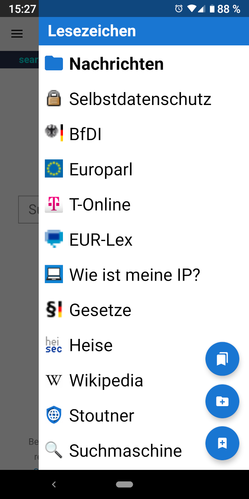

Lesezeichen Lesezeichen
Lesezeichen LesezeichenLesezeichen können im Privacy Browser durch Wischen vom rechten Rand erreicht werden.
Tippen Sie eines der Icons an, um Lesezeichen in der Lesezeichen-Übersicht zu ändern, umszuortieren oder zu löschen. In der Lesezeichen-Übersicht gibt es eine Option, um die Lesezeichen in der Datenbank-Ansicht anzuzeigen. Diese zeigt die Lesezeichen, wie sie in der SQLite-Datenbank enthalten sind. Dies kann bei Problemen beim Importieren oder Exportieren von Lesezeichen hilfreich sein.